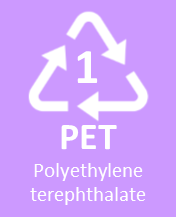
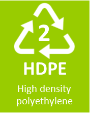
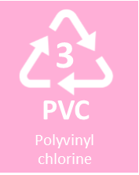
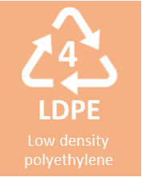
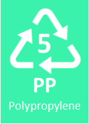
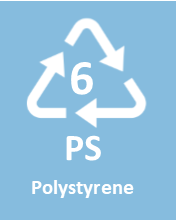
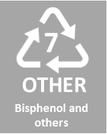

Recycling is the process of converting waste materials into new materials and objects.
It conserves energy, reduces air and water pollution,
reduces greenhouse gases, and conserves natural resources.
They are an important part of sustainable living,
as they help to cut down on the amount of waste we have to throw away.
In Malaysia, the recycle bins are split into 3:
Blue bin for Paper, Brown bin for Glass, and Orange bin for plastic and aluminium.
On Recyclable Plastics such as your drinking bottle or your take-away food packaging,
There are recycling symbols on them to identify what they are made of and if they are recyclable.
These are the 7 types of numbers and what it means.
| Symbol Number | Common Forms | Can it be Recycled? |
|---|---|---|
| 1. Polyethylene terephthalate (PET)  |
PET is commonly used to make water bottles, and condiment bottles such as peanut butter and vegemite containers. | YES! |
| 2. High density polyethylene (HDPE)  |
HDPE plastics are used to make milk jugs, shampoo bottles, detergent bottles etc. | YES! |
| 3. Polyvinyl cholrine (PVC)  |
PVC is a soft and flexible plastic, so it is used to make a lot of household products such as plastic tubing, kids' toys, plastic trays, and furniture. | NO |
| 4. Low density polyethylene (LDPE)  |
LDPE is used to make plastic wrappings and grocery bags, and plastic bags in general. | SOMETIMES |
| 5. Polypropylene (PP)  |
PP is used to make food containers for products such as yoghurt. It is also used to make straws, carpet, and bottle caps. | SOMETIMES |
| 6. Polystyrene (PS)  |
Styrofoam are made out of PS plastic, so it is commonly use to make disposable coffee cups, coolers, take-away food containers, and so on. | SOMETIMES |
| 7. Bisphenol and others  |
Any platics that does not fit into the previous 6 categories falls under this. Products with the number 7 are usually made out of multiple plastic types or by types of plastic that can't easily be recycled. | SOMETIMES |
There are other ways to reduce pollution, such as reusing and reducing.
Reusing is taking old or unwanted items you might otherwise throw away
and finding a new use for them.
Reducing is simply creating less waste.
By reducing, you stop the problem at the source.
Making less waste to begin with means there's less waste to clean up.
Contact us to recieve weekly information regarding recycling
or to ask any questions regarding to recycling!
Click on the button below to sign up:
Click Here!